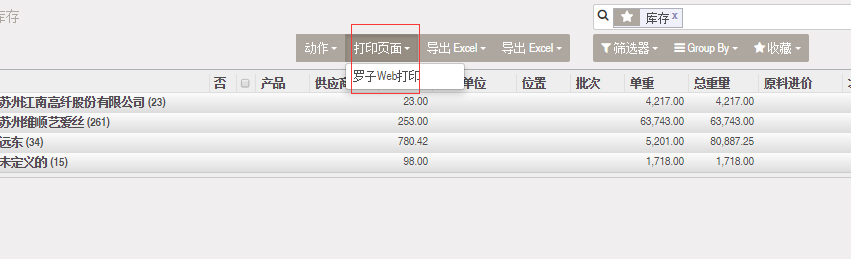
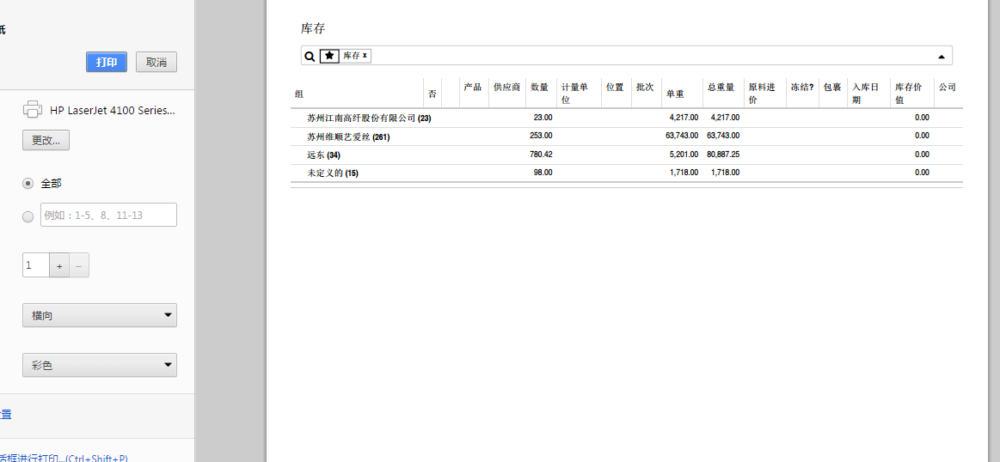
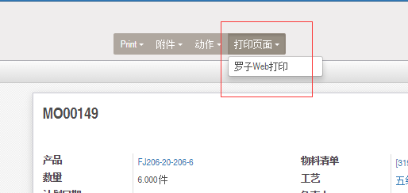
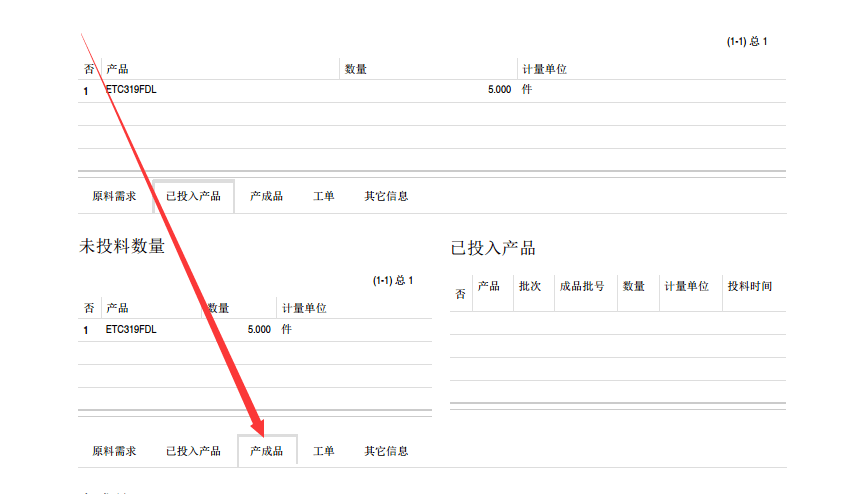
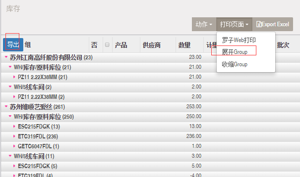
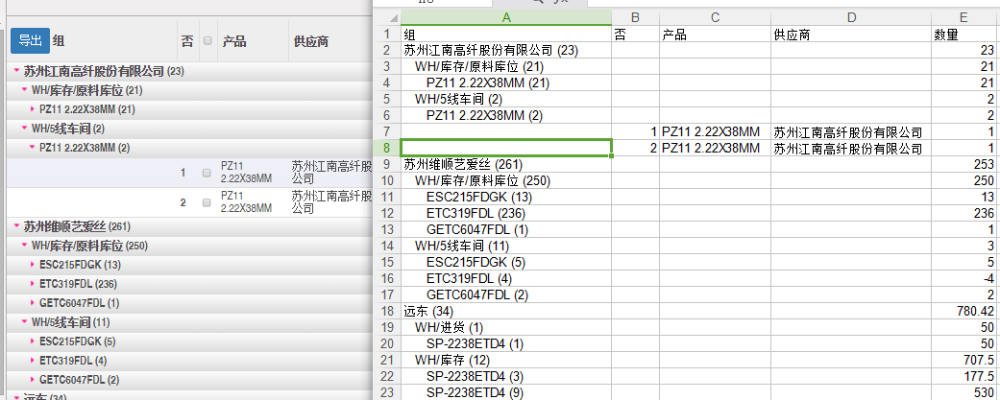

What you see and what you print, let qweb reporter go to hell
1,ListView下,特别是group下的打印菜单:

2,ListView下打印效果:

3,FormView下打印菜单:

4,FormView下打印效果:

5,增加逐级展开group及tlistview导出:

6,group导出如下:

本模块志出excel时使用xlwt，正常安装的odoo会有这个模块，不需要另外安装。
其它问题,请联系 410881525@qq.com